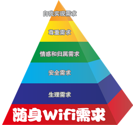
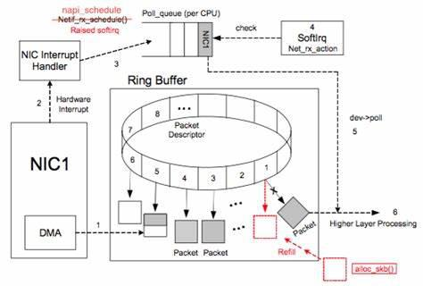
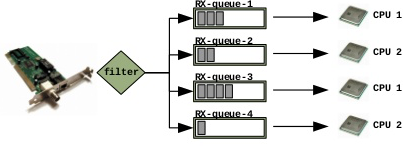
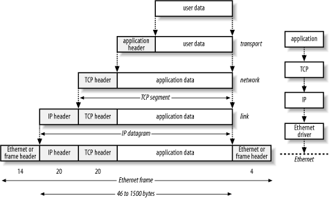
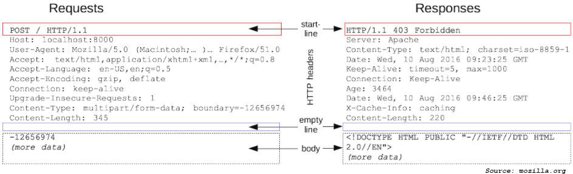

public: True class: center, middle # 网络与套接字 蒋炎岩 <jyy@nju.edu.cn> 南京大学计算机软件研究所 --- # 本讲概述 > 在这学期的课程中，已经学习过一些.red[一台计算机上]进程/线程间通信的手段 > > * 共享内存；互斥锁、条件变量、信号量；管道…… > > 如何让两个物理上隔离的计算机(操作系统)上的进程有效地通信？ ---- * 网络设备 * 协议栈与互联网 * 套接字编程 --- class: center, middle # 网络设备 --- # “网卡”：第三类设备 字符设备、块设备、网络设备 * 字符设备：read, write (字节流), ioctl * 块设备：read, write (数据块), ioctl * 网络设备：？？？ ---- 为什么网络设备是“第三类设备”？ * 速度非常快，例如10,000Gbps (万兆网卡) * `while (1) { read(); process(); }`将会导致大量丢包 * 必须被特别处理 --- # 以太网 (Local Area Network) 两个操作： * .red[发送]一个数据包 (frame) * .red[接收]一个数据包 (frame) * 以太网使用MAC地址；由生产厂商保证全球唯一性 * FF:FF:FF:FF:FF:FF = broadcast (例如分配IP地址时使用) .center[<img src="../static/wiki/os/2019/img/ether-frame.jpg" width="640px"/>] --- # 以太网设备的地址 Media Access Control (MAC)地址 * 由设备生产商保证全球唯一 * 思考题：.green[虚拟机怎么办？] .center[<img src="../static/wiki/os/2019/img/mac-addr.jpg" width="400px"/>] --- # 在地址之间传输数据 一根网线连接两台计算机，就能实现点对点传输 * Hub：共享介质 * 把多台计算机连接到一个共享的导线上 * Switch：交换机 * 能够连接很多台计算机，实现ether frame的定向转发 --- # Wifi .float-right[] “IEEE 802.11, Wireless Ethernet Protocols, Wireless Ethernet Standards” * 无线以太网协议 * 用电磁波做介质 --- # 网络设备 三个重要组成部分 * 内存 (用于缓存收取/发送的数据包) * DMA (用于自动地把设备内存中的数据复制到操作系统) * 中断 (将中断发送到各个处理器) .center[] --- # 网络设备驱动 简化版： * send() - 发送一个包 * poll() - 询问是否有已经收到的包，返回一个ring buffer的指针 * bufctl() - 设置ring buffer的状态 --- # 网络设备驱动 (cont'd) 设备驱动实现 * TX (transmit) ring buffer → 发包立即返回，不必等发出 * buffer满，发送失败 * RX (receive) ring buffer → 收包立即保存，不必等程序读取 * buffer满，丢包 (由其他机制保证数据的重新传送) * 读取/写入包之后，相应更新设备驱动程序TX/RX rings的配置 ---- 设备会自动使用DMA读取/写入数据，完成发送/接收 * 行为的确和char/block device有很大不同，值得作为“第三种设备” --- # 今天的网络设备 在网卡中维护多个队列(例如10Gbps网卡通常有16TX, 16RX) * 为虚拟机分别分配队列 * 为处理器分配队列 * 能够将TCP/IP包转发给正确的虚拟机 .center[] --- class: center, middle # 网络协议栈 --- # 使用网络设备：困难 显然，以太网设备很难直接使用 * 数据是.red[异步]的 * 网卡随时可能写入RX ring，然后发送中断 * 传输是不可靠的 * TX ring的数据被网卡取走后不能保证成功送达 * 可能有些数据丢失 * 网络设备需要.red[虚拟化]给各个进程使用 * .green[如何设计应用程序访问网络的API]？ --- # 理想的虚拟化：管道 `pipe("jyy-server", "sshd", fds);`，然后开始通信 .center[<img src="../static/wiki/os/2019/img/socket-demo.png" width="480px"/>] --- # 实现尝试：虚拟化网络设备 以太网是很粗暴的，但我们可以在以太网的数据里.red[封装]其他的协议 .center[] --- # IP: Internet Protocol 建立(全球)计算机之间的数据连接 * 早期：全球的计算机都有唯一的IP地址 * 现在：IP地址不够用 (.green[怎么办？]再.red[虚拟化！]) ---- 那些熟悉的IP地址 * (A) 10.0.0.0 - 10.255.255.255 * (B) 172.16.0.0 - 172.31.255.255 * (B) 169.254.0.0 - 169.254.255.255 * (C) 192.168.0.0 - 192.168.255.255 --- # TCP: Transmission Control Protocal 提供两个主机上应用程序的可靠通信连接 * 应用程序用端口表示 * SSH: 22, HTTP: 80, HTTPS: 443, MySQL: 3306, VNC: 5801, Redis: 6379 * 如果某个软件有已知安全漏洞，就很容易通过IP+端口找到 * 提供可靠的连接 * 使网络编程和使用管道一样简单！ --- # Client-Server API 服务器 ```c conn = bind(IP, port); fd = accept(conn); // 管理多个连接：select/poll read(fd, ...); write(fd, ...); ``` ---- 客户端 ```c fd = connect(IP, port); // 同样有一个port read(fd, ...); write(fd, ...); ``` --- # 观察网络的工具 * netstat * 查看网络统计信息(`netstat -l`) * nmap * 端口扫描工具 * tcpdump/wireshark * 查看数据包的内容 --- class: center, middle # 互联网 --- # World Wide Web “万维网” * <del>某种不存在的范围内</del>世界各地的计算机可以相互沟通 * 以URL定位计算机；以HTTP协议进行通信；显示HTML * W3C制定标准(HTML, CSS, JavaScript) --- # `www.nju.edu.cn` 用IP地址上网，一听就不是个好主意啊 WWW提供了.red[名称服务] (URL → IP地址) * 在TCP/IP协议之上实现 * DNS服务器异常会导致名称无法解析(作业提交失败) ---- * DNS用IP指定： * 南京电信； `218.2.135.1` * Google: `8.8.8.8`, `4.4.4.4` * `nslookup` * `/etc/hosts`：localhost是127.0.0.1的(本地)别名 --- # HTTP协议 Hypertext Transfer Protocol * 一组用于传输网页(HTML, js, css, …)的协议 * 例子：简单的[httpd.c](/static/wiki/os/2019/demos/httpd.c) .center[] --- # 近距离观察HTTP ```text tcpdump -i any -s 0 -A -vv 'tcp[((tcp[12:1] & 0xf0) >> 2):4] = 0x47455420' ``` * `0x47455420` = `"GET "` * 找到所有以“GET”开头的TCP包 ---- tcpdump是非常有用的工具 * 更有用的是WireShark * 上网络课你们就会用到了 --- #实现浏览器 .float-right[<img src="../static/wiki/os/2019/img/domtree.png" width="300px"/>] HTTP就是这样“一来一回”的协议 * 浏览器：请求用户的URL，得到页面，建立DOM Tree * 请求页面上的其他元素并显示 * `<img src="html"/>` * `<script src="xxx.js.html"></script>` * 执行脚本；脚本可以执行其他脚本或修改DOM --- # 实现浏览器 (cont'd) HTTP协议并不一定需要浏览器 * 直接通过网络API发送请求(Python requests; curl) * 作业提交脚本：`curl -m 1 -Ls -w '%{url_effective}' -o /dev/null 'http://moon.nju.edu.cn/~jyywiki' | grep -o 'http://[^/]*/'` * headless的浏览器(Firefox/Chrome headless mode; PhantomJS) * 对自动化测试/hacking非常有用！